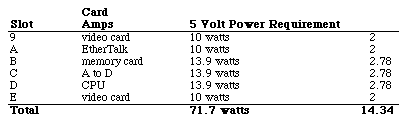

Legacy Document
Important: This document is part of the Legacy section of the ADC Reference Library. This information should not be used for new development.
Current information on this Reference Library topic can be found here:
ADC Home > Reference Library > Technical Notes > Legacy Documents > Hardware & Drivers >
Important: This document is part of the Legacy section of the ADC Reference Library. This information should not be used for new development.
Current information on this Reference Library topic can be found here:
|
Click-Click Mode?Designing Cards and Drivers for the Macintosh clearly states that allowed power per NuBus slot is 13.9 watts (pg. 6-6). That is 2 amps at 5 volts, 0.175 amps at 12 volts, and 0.15 amps at -12 volts. If your Nubus card requires more than this allocation, then you need to make sure that users do not fill all of their Nubus slots. A good rule of thumb is that if users can fill all of their slots with your card and the machine is still able to boot, then you are okay. If the machine goes into click-click mode, then you need to make sure that users cannot fill their slots. Click-click mode is a safety feature of the Macintosh power supply. The Macintosh is trying to start the machine and finding that the power requirements are greater than it can handle. The problem is that the power supply is not getting far enough into the startup procedure to turn itself off, so it keeps trying to turn itself on. The only way out of this mode is to pull the plug. What's Allowed and WhyFollowing are a few scenarios which might cause major heart problems for a user (these stories are fictional, and the names have been made generic to protect the innocent). This first scenario ends with a power requirement which exceeds the allowed power by 1.6 watts. The result of this over requirement can cause some very nasty results. Even if the machine could work, there is no guarantee to cover a thermal problem. The Macintosh was designed with the assumption that there would only be a need to dissipate 83.4 watts of NuBus power. If the machine must dissipate more than 83.4 watts of NuBus power, then it is possible that you might start burning chips. An even worse scenario considers a fully loaded Macintosh IIcx. It is a lot easier to load up a IIcx, since the IIcx has half as many slots as the II and a power limit of 41.7 watts. This second scenario demonstrates a less high-powered user with a IIcx. In the second case, the machine is overdrawn by 3.3 watts. You may think that this is not a reasonable list of power requirements, but the reality of the power requirements is not the point. The point is that card developers must put forth an effort to protect the users, or we all look very bad when the silicon starts to melt. It is not very favorable to have our users burning up their machines because a NuBus card needed more power than it was allowed. The wattage which a card requires is not the entire problem. It is possible to stay within the 13.9 watt limit and still have problems. You must also stay within the amperage limit for each voltage. You cannot just assume that since you are not using the 12 and -12 volts that you can use 2.78 amps of 5 volts (13.9 watts); the Macintosh power supply was not designed to convert 12 volt power allocation to 5 volt when it is needed. Scenario three presents an example of a Macintosh II which is filled with cards that are within the wattage limit, but that exceed the amperage limit.  Under normal conditions, the Macintosh II power supply can handle up to 12 amps at 5 volts. In the third scenario the NuBus cards are drawing 14.34 amps. Half of the cards are within the limit, but the other cards are not, and the result is a Macintosh which goes click-click. But I Need the Power...Now that we've told you not to take more power than you are allowed, we are going to give you a way out. We understand that it is impossible to fit within this power budget with some types of NuBus cards; if your card contains a processor, or worse, a lot of RAM, then you are going to run into the power allocation very quickly. In the rare case when you do need to consume the power of multiple slots, then you really must make absolutely sure that the slot or slots next to your card are not used. The first possible solution is simply blocking off the slot or slots next to your board. You can build a device which extends out of your card to prevent the user from inserting other cards in the adjoining slot or slots. The first slot to cover is the one on the component side of your card, thus allowing increased air flow on the side of your card which is most likely a little warm. This method, however, is not necessarily the method of choice. One of the problems with this method is that the power allocation is not part of the NuBus specification, it is a Macintosh-specific limit. It is always possible that this limit will be raised on future machines, and you do not want to implement this solution on machines where the problem is not a problem. The second solution is a bit cleaner than the first; however, it also has the potential for a similar problem with future machines. The second solution is to design your card as a multiple-card implementation and have an internal bus which connects the two cards with ribbon cables or another type of connector. The benefits to this solution are a guarantee that users physically cannot put more cards in their systems than the power supply can handle and you get additional real estate with which to play. A third, and perhaps simpler, solution is to ship a slot cover with your card. You can ask users to install the cover over the slot next to your card (or multiple slots if necessary). This cover should keep the user from inadvertently using the slot while not forcing the loss of a slot in any future machine with an increased power budget. This route would require an explanation and visible warning in the documentation; however, if the users do not heed your warning, then they cannot very well blame you for their clicking Macintosh (they will probably blame us). These solutions are not the only ones which exist, but we haven't thought of any other great ideas. The main goal is to provide a method which protects users from overextending their machines. If you can devise such a method, then more power to you (well, not really). Don't Get FlamedSo the moral (what's that) of the story is that you need to put yourself into the shoes of your users (but don't try it literally). If they burn up our computers or find themselves in click-click mode because a NuBus card got a little greedy, then they are going to be very upset, and that is something that both Apple and third-party developers need to work very hard to prevent. If you "need" the extra power, then you must make absolutely sure that users are not going to get burned by your NuBus card. ReferencesDesigning Cards and Drivers for the Macintosh IEEE Standard for a Simple 32-Bit Backplane Bus: NuBus Technical Note M.HW.NuBusDesign - NuBus Physical Designs - Beware NuBus is a trademark of Texas Instruments Downloadables
|
|